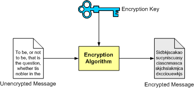
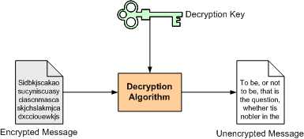
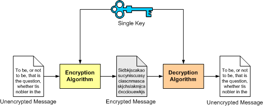
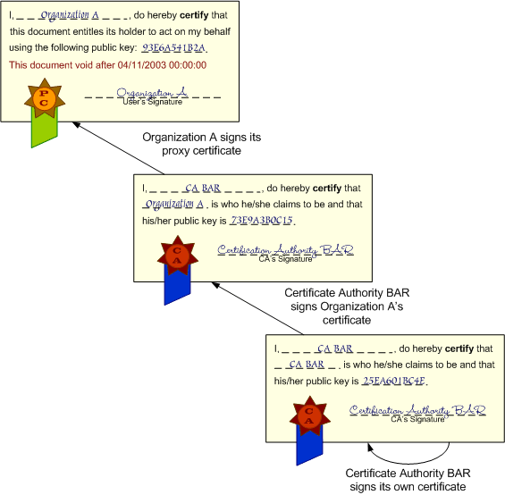

Globus > Toolkit > Documentation > 3.2 > Key Concepts <
Overview
OGSA, OGSI, and GT3.2
Web Services: architecture and languages
Grid Services
GT3.2 Architecture
>Security
Java & XML
[but should this just link to GSI key concepts??]
Working with the GT3.2 Security Services requires a basic knowledge of certain fundamental computer security concepts. If you are already familiar with concepts such as authentication, authorization, public key cryptography, and certificate authorities, then you can safely skip this section. If you've never dealt with secure communications, or feel your knowledge of these concepts might be a bit rusty, then you should read this section. However, take into account that this section is meant as an overview of these concepts.
The first thing we have to ask ourselves is: Well, just what is a secure communication? Newcomers to the field of computer security tend to think that a 'secure communication' is simply any communication where data is encrypted. However, security encompasses much more than simply encrypting and decrypting data.
Most authors consider the three pillars of a secure communication (or 'secure conversation') to be privacy, integrity, and authentication. Ideally, a secure conversation should feature all three pillars, but this is not always so (sometimes it might not even be desirable). Different security scenarios might require different combination of features (e.g. "only privacy", "privacy and integrity, but no authentication", "only integrity", etc.).
Privacy
A secure conversation should be private. In other words, only the sender and the receiver should be able to understand the conversation. If someone eavesdrops on the communication, the eavesdropper should be unable to make any sense out of it. This is generally achieved by encryption/decryption algorithms.
For example, imagine we want to transmit the message "INVOKE METHOD ADD", and we want to make sure that, if a third party intercepts that message (e.g. using a network sniffer), they won't be able to understand that message. We could use a trivial encryption algorithm which simply changes each letter for the next one in the alphabet. The encrypted message would be "JOWPLFANFUIPEABEE" (let's suppose 'A' comes after the whitespace character). Unless the third party knew the encryption algorithm we're using, the message would sound like complete gibberish. On the other hand, the receiving end would know the decryption algorithm beforehand (change each letter for the previous one in the alphabet) and would therefore be able to understand the message. Of course, this method is trivial, and encryption algorithms nowadays are much more sophisticated. We'll look at some of those algorithms in the next page.
Integrity
A secure communication should ensure the integrity of the transmitted message. This means that the receiving end must be able to know for sure that the message he is receiving is exactly the one that the transmitting end sent him. Take into account that a malicious user could intercept a communication with the intent of modifying its contents, not with the intent of eavesdropping.
'Traditional' encryption algorithms don't protect against these kind of attacks. For example, consider the simple algorithm we've just seen. If a third party used a network sniffer to change the encrypted message to "JAMJAMJAMJAMJAMJA", the receiving end would apply the decryption algorithm and think the message is "I LI LI LI LI LI ". Although the malicious third party might have no idea what the message contains, he is nonetheless able to modify it (this is relatively easy to do with certain network sniffing tools). This confuses the receiving end, which would think there has been an error in the communication. Public-key encryption algorithms (which we'll see shortly) do protect against this kind of attacks (the receiving end has a way of knowing if the message it received is, in fact, the one the transmitting end sent and, therefore, not modified).
Authentication
A secure communication should ensure that the parties involved in the communication are who they claim to be. In other words, we should be protected from malicious users who try to impersonate one of the parties in the secure conversation. Again, this is relatively easy to do with some network sniffing tools. However, modern encryption algorithms also protect against this kind of attacks.
Another important concept in computer security, although not generally considered a 'pillar' of secure communications, is the concept of authorization. Simply put, authorization refers to mechanisms that decide when a user is authorized to perform a certain task. Authorization is related to authentication because we generally need to make sure that a user is who he claims to be (authentication) before we can make a decision on whether he can (or cannot) perform a certain task (authorization).
For example, once we've ascertained that a user is a member of the Mathematics Department, we would then allow him to access all the MathServices. However, we might deny him access to other services that are not related to his department (BiologyService, ChemistryService, etc.)
Authorization vs. Authentication
It is very easy to confuse authentication and authorization, not so much because they are related (you generally need to perform authentication on a user to make authorization decisions on that user), but because they sound alike! ("auth...ation") This is somewhat aggravated by the fact that many people tend to shorten both words as "auth" (especially in programming code). At this point, you might be saying to yourself: "That's pretty silly, they're different concepts... I'm not going to confuse them just because they sound alike!" Well, believe me, it happens, and quite a lot :-) When in doubt, remember that authentication refers to finding out if someone's identity is authentic (if they really are who they claim to be) and that authorization refers to finding out is someone is authorized to perform a certain task.
[ top ]
Cryptography is "the art of writing in secret characters". Encrypting is the act of translating a 'normal message' to a message written with 'secret characters' (also known as the encrypted message). Decrypting is the act of translating a message written with 'secret characters' into a readable message (the unencrypted message). It is, by far, one of the most important areas in computer security, since modern encryption algorithms can ensure all three pillars of a secure conversation: privacy, integrity, and authentication.
In the previous page we saw a rather simple encryption algorithm which simply substituted each letter in a message by the next one in the alphabet. The decryption algorithm was, of course, substituting each letter in the encrypted message by the previous letter in the alphabet. These kind of algorithms, based on the substitution of letters, are easily cracked. Most modern algorithms are key-based.
A key-based algorithm uses an encryption key to encrypt the message. This means that the encrypted message is generated using not only the message, but also using a 'key':

The receiver can then use a decryption key to decrypt the message. Again, this means that the decryption algorithm doesn't rely only on the encrypted message. It also needs a 'key':

Some algorithms use the same key to encrypt and decrypt, and some do not. However, we'll look into this in more detail in the next page.
Let's take a look at a simple example. To make things simpler, let's suppose we're not transmitting alphanumerical characters, only numerical characters. For example, we might me interested in transmitting the following message:
1 2 3 4 5 6 5 4 3 2 1We will now choose a key which will be used to encrypt the message. Let's suppose the key is "4232". To encrypt the message, we'll repeat the key as many times as necessary to 'cover' the whole message:
1 2 3 4 5 6 5 4 3 2 1 4 2 3 2 4 2 3 2 4 2 3Now, we arrive at the encrypted message by adding both numbers:
1 2 3 4 5 6 5 4 3 2 1 + 4 2 3 2 4 2 3 2 4 2 3 --------------------- 5 4 6 6 9 8 8 6 7 4 4The resulting message (54669886744) is the encrypted message. We can decrypt following the inverse process: Repeating the key as many time as necessary to cover the message, and then subtract the key character by character:
5 4 6 6 9 8 8 6 7 4 4 - 4 2 3 2 4 2 3 2 4 2 3 --------------------- 1 2 3 4 5 6 5 4 3 2 1Voilà! We're back at the unencrypted message! Notice how it is absolutely necessary to have the decryption key (in this case, the same as the encryption key) to be able to decrypt the message. This means that a malicious user would need both the message and the key to eavesdrop on our conversation.
Please note that this is a very trivial example. Current key-based algorithms are much more sophisticated (for starters, keys are at least 128 bits long, and the encryption process is not as simple as 'adding the message and the key). However, these complex algorithms are based on the same basic principle shown in our example: a key is needed to encrypt/decrypt message.
The example algorithm we've just seen falls into the category of symmetric algorithms. These type of algorithm uses the same key for encryption and decryption:

Although this type of algorithms are generally very fast and simple to implement, they also have several drawbacks. The main drawback is that they only guarantee privacy (integrity and authentication would have the be done some other way). Another drawback is that both the sender and the receiver need to agree on the key they will use throughout the secure conversation (this is not a trivial problem).
Secure systems nowadays tend to use asymmetric algorithms, where a different key is used to encrypt and decrypt the message. Public-key algorithms, which are introduced in the next page, are the most commonly used type of asymmetric algorithms.
[ top ]
Public-key algorithms are asymmetric algorithms and, therefore, are based on the use of two different keys, instead of just one. In public-key cryptography, the two keys are called the private key and the public key
In a basic secure conversation using public-key cryptography, the sender encrypts the message using the receiver's public key. Remember that this key is known to everyone. The encrypted message is sent to the receiving end, who will decrypt the message with his private key. Only the receiver can decrypt the message because no one else has the private key. Also, notice how the encryption algorithm is the same at both ends: what is encrypted with one key is decrypted with the other key using the same algorithm.
Public-key systems have a clear advantage over symmetric algorithms: there is no need to agree on a common key for both the sender and the receiver. As seen in the previous example, if someone wants to receive an encrypted message, the sender only needs to know the receiver's public key (which the receiver will provide; publishing the public key in no way compromises the secure transmission). As long as the receiver keeps the private key secret, no one but the receiver will be able to decrypt the messages encrypted with the corresponding public key. This is due to the fact that, in public-key systems, it is relatively easy to compute the public key from the private key, but very hard to compute the private key from the public key (which is the one everyone knows). In fact, some algorithms need several months (and even years) of constant computation to obtain the private key from the public key.

Another important advantage is that, unlike symmetric algorithms, public-key systems can guarantee integrity and authentication, not only privacy. The basic communication seen above only guarantees privacy. We will shortly see how integrity and authentication fit into public-key systems.
The main disadvantage of using public-key systems is that they are not as fast as symmetric algorithms.
Integrity is guaranteed in public-key systems by using digital signatures. A digital signature is a piece of data which is attached to a message and which can be used to find out if the message was tampered with during the conversation (e.g. through the intervention of a malicious user)
The digital signature for a message is generated in two steps:
The digital signature is attached to the message, and sent to the receiver. The receiver then does the following:
Using public-key cryptography in this manner ensures integrity, because we have a way of knowing if the message we received is exactly what was sent by the sender. However, notice how the above example guarantees only integrity. The message itself is sent unencrypted. This is not necessarily a bad thing: in some cases we might not be interested in keeping the data private, we simply want to make sure it isn't tampered with. To add privacy to this conversation, we would simply need to encrypt the message as explained in the first diagram.
The above example does guarantee, to a certain extent, the authenticity of the sender. Since only the sender's public key can decrypt the digital signature (encrypted with the sender's private key). However, the only thing this guarantees is that whoever sent the message has the private key corresponding to the public key we used to decrypt the digital signature. Although this public key might have been advertised as belonging to the sender, how can we be absolutely certain? Maybe the sender isn't really who he claims to be, but just someone impersonating the sender.
Some security scenarios might consider that the 'weak authentication' shown in the previous example is sufficient. However, other scenarios might require that there is absolutely no doubt about a user's identity. This is achieved with digital certificates, which are explained in the next page.
[ top ]
A digital certificate is a digital document that certifies that a certain public key is owned by a particular user. This document is signed by a third party called the certificate authority (or CA). The following illustration might help get an idea of what a digital certificate is:
Of course, the certificate is encoded in a digital format (no, you don't get a paper diploma so you can brag to your pals that "you really are who you claim to be" :-) The important thing to remember is that the certificate is signed by a third party (the certificate authority) which does not itself take place in the secure conversation. The signature is actually a digital signature generated with the CA's private key. Therefore, we can verify the integrity of the certificate using the CA's public key.
Having a certificate to prove to everyone else that your public key is truly yours conquers the third pillar of a secure conversation: authentication. If you digitally sign your message with your private key, and send the receiver a copy of your certificate, he can know for sure that the message was sent by you (because only your public key can decrypt the digital signature... and the certificate assures that the public key the receiver uses is yours and no one else's)
However, all this is true supposing you trust the certificate. To be more exact, you have to trust the CA that signs the certificate. There are no complicated algorithms to decide when a CA is trustworthy. You must decide by yourself whether you trust or don't trust a CA. This means that the public-key system you use will generally have a list of 'trusted CAs', which includes the digital certificates of those CAs you will trust (each of these certificates, in turn, includes the CA's public key, so you can verify digital signatures).
You must decide which CAs make it into the list. Some CAs are so well known that they are included by default in many public-key systems (for example, web browsers usually include VeriSign and GlobalSign certificates, because many websites use certificates issued by those companies to authenticate themselves to web browsers). Of course, you can add other CAs to the 'trusted list'. For example, if your department sets up a CA, and you trust that the department's CA will only issue certificates to trustworthy people, then you could add it to the list.
Now that we've gone through the basics, let's take a look at the format in which digital certificates are encoded: the X.509 certificate format. An X.509 certificate is a plain text file which includes a lot of information in a very specific syntax. That syntax is beyond the scope of this document, and we'll simply mention the four most important things we can find in an X.509 certificate:
As you can see, this information we can find in an X.509 certificate is the same which was shown in the illustration at the beginning of this page (name, CA's name, public key, CA's signature).
Distinguised names
Names in X.509 certificates are not encoded simply as 'common names', such as "Borja Sotomayor", or "Certificate Authority XYZ", or "Systems Administrator". They are encoded as distinguished names, which are a comma-separated list of name-value pairs. For example, the following could be my distinguished name:
O=University of Deusto, OU=Department of Software Engineering, CN=Borja SotomayorSo what do "O", "OU", and "CN" mean? A distinguished name can have several different attributes, and the most common are the following:
We mentioned earlier that your 'trusted CA list' includes the certificates of all the CAs you decided to trust. At that point, you might have asked yourself: And who signs the CA's certificate? The answer is very simple: Another CA! This allows for hierarchies of CAs to be created, in such a way that although you might not explicitly trust a CA (because it's not in your list), you might trust the higher-level CA that signed its certificate (which makes the lower-level CA trustworthy)
The following illustration might make things a bit clearer:
In the illustration, my certificate is signed by Certificate Authority FOO. Certificate Authority FOO's certificate is, in turn, signed by Certificate Authority BAR. Finally, BAR's certificate is signed by itself (we'll get to this in a second).
If you receive my certificate, and don't explicitly trust CA FOO (the issuer of my certificate), this doesn't automatically mean my certificate isn't trustworthy. You might check to see if CA FOO's certificate was issued by a CA you do trust. If it turns out that CA BAR is in your 'trusted list', then that means that my certificate is trustworthy.
However, notice that the higher-level CA (BAR) has signed its own certificate. This is not uncommon, and is called a self-signed certificate. A CA with a self-signed certificate is called a root CA, because there's 'no one above it'. To trust a certificate signed by this CA, it must necessarily be in your 'trusted CA list'.
[ top ]
This section introduces the Grid Security Infrastructure, the basis for GT3's Security layer. A working knowledge of fundamental security concepts is assumed in this section. If you've read the previous section (Fundamental Security Concepts), you should be fine. If you haven't, but you know how public-key cryptography, certificates, and certificate authorities work, then you should also be fine. If neither of these apply to you, then I strongly suggest you take a look at the Fundamental Security Concepts.
If you're familiar with Grid Computing (which you should be, if you've come this far in the tutorial! :-) you probably know that security is one of the most important parts of a grid application. Since a grid implies crossing organizational boundaries, resources are going to be accessed by a lot of different organizations. This poses a lot of challenges:
The Globus Toolkit 3 allows us to overcome the security challenges posed by grid applications through the Grid Security Infrastructure (or GSI), which offers programmers the following three features:
GSI is composed of a set of command-line tools to manage certificates, and a set of Java classes to easily integrate security into our grid services. It is based on standard technologies, such as TLS (formerly SSL) and secure Web Services specifications (XML-Signature, XML-Encryption, etc.)
Let's take a closer look at the three main features of GSI:
The GSI is based on public-key cryptography, and therefore can be configured to guarantee privacy, integrity, and authentication (strong authentication is provided in conjunction with certificates, as will be explained next). However, not all communications need to have those three features all at once. In general, a GSI secure conversation must at least be authenticated. Integrity is usually desireable, but can be disabled. Encryption can also be activated to ensure privacy
As soon as we start programming secure grid services, we'll see how using these features is as easy as adding a few lines in the client indicating that (for example) we want to use integrity, but not encryption during the communication.
The GSI uses X.509 certificates (as seen in the previous section) to guarantee a strong authentication. Mutual authentication simply means that in GSI, both parts of a secure conversation must be authenticated. In other words, when A wants to communicate with B, A must trust B and B must trust A. Remember that 'trust' (in this context) means that A must have the certificate of the CA that signed B's certificate, and viceversa. Otherwise, A won't trust B (and viceversa).
One of the first practical things we will do in the tutorial (in the next section, "Setting up GSI") is to setup a very simple CA, and get a digital certificate for ourselves.
Credential delegation and single sign-on are one of the most interesting features of GSI, and are possible thanks to something called proxy certificates. Before looking into these concepts in detail, let's first take a look at the problem they solve.
In the previous page, an interesting scenario was described:
Organization A asks Organization B to perform a task. Since B trusts A, it accepts to perform the task. But let's suppose that task Z is very complex, and that one of its subtasks (Y) must be performed by a third organization: Organization C. In this case, B will ask C to perform subtask Y but, alas!, C only trusts A. What should C do? It has two options:
In this situation, it seems logical that C should accept B's request. However, C has to know that B's request is performed on behalf of A:
Of course, this is not a very secure solution, since anyone could claim to be acting on A's behalf! One possible solution would be for C to contact A every time it receives a request on A's behalf. However, this could be a bit of a nuisance. Imagine that task Z is composed of 20 different subtasks, and that each subtask is dispatched to a different organization by B. Organization A would be flooded with messages saying "B just asked me to perform a task on your behalf... can you confirm that this is correct?". In response, A would have to mutually authenticate itself with all those organizations and give a confirmation.
A more elegant solution would be to somehow make Organization C believe that Organization B is Organization A. In other words, it would interesting to find a legitimate way for B to demonstrate that it is, in fact, acting on A's behalf. One way of doing this would be for A to 'lend' its public and private key pair to B. However, this is absolutely out of the question. Remember, the private key has to remain secret, and sending it to another organization (no matter how much you trust them) is a big breach in security. What we really need is something like this:
The certificate pictured above is a proxy certificate. Webster's Dictionary defines 'proxy' as "The instrument by which a person is empowered to transact the affairs of another". As you can see in the picture, the proxy certificate allows the holder of the certificate to act on A's behalf. In fact, it's very similar to the X.509 digital certificates seen in the previous section, except that it's not signed by a Certificate Authority; it's signed by an end user. We can be sure that the certificate is authentic by checking its signature (Organization A digitally signs the certificate, as described in the previous section).
But, what about the proxy certificate's public key? Whose public key is it? Organization A's? Organization B'? The answer is 'neither'. A proxy certificate has a private-public key pair generated specifically for the proxy certificate. This private-public key pair is mutually agreed upon by both parties (in this case, A and B), and Organization A will only allow the holder of that private-public key pair to act on its behalf (in this case, B). The exact mechanism by which the proxy certificate is generated by A and B will be described shortly.
There is, however, something missing from the picture. Allowing someone to act unconditionally on your behalf is a risky affair. Sure, you might trust them now, for the particular task you want to do, but someone from Organization B might use the proxy certificate in the future to carry out some mischievous deeds on your behalf. Therefore, the lifetime of the certificate is usually very limited (for example, to 24 hours). This means that, if the proxy certificate is compromised, the attacker won't be able to make much use of it. Furthermore, proxy certificates extend ordinary X.509 certificates with extra security features to limit their functionality even more (for example, by specifying that a proxy certificate can only be used for certain tasks). Summing up, a more correct representation of a proxy certificate would be the following:
A proxy certificate allows a user to act on another user's behalf. This is more properly called credential delegation, since proxy certificates allow a user to effectively delegate a set of credentials (the user's identity) to another user. This solves the problem originally posed, since B could use a proxy certificate (signed by A, of course) to prove that it is acting on A's behalf. Organization C would then accept B's request.
By using proxy certificates we also get another desirable feature: single sign-on. Without proxy certificates, Organization A would have to mutually authenticate itself with all the organizations that receive requests 'on behalf of A'. In practice, this mean that the user in Organization A with permission to read the private key would have to access the key each time a mutual authentication is needed. Since private keys are usually protected by a password, this means that the user would have to sign on (provide the password) to access the key and perform mutual authentication. Using proxy certificates, the user only has to sign in once to create the proxy certificate. The proxy certificate is then used for all subsequent authentications.
Finally, although we've centered on the advantages of proxy certificates for delegation, these certificates have other features that make them interesting for other purposes. For example, they can be used locally: generating a proxy certificate that authorizes myself to act on my behalf. This might sound silly, but is actually very useful since I can use the proxy certificate for all my secure conversations, instead of using my public-private key pair directly. This reduces the risk of having my conversations compromised because an attacker would only have a chance to crack the proxy's key pair, and not my personal one (which would only be used to generate the proxy certificate). We're not going to discuss all the added benefits of proxy certificates, since in a Grid Services-based application we will be mainly concerned with delegation and single sign-on. However, a link is provided at the end of this page if you are interested in reading more about proxy certificates.
At this point, you might be truly impressed at how masterfully proxy certificates allow us to delegate credentials in a completely secure manner. Then again, maybe not :-) If you are not willing to take a leap of faith when I say "Proxy certificates are really nifty!", and are not totally convinced that they are secure, the following paragraphs give a much more detailed look at the process of creation and validation of a proxy certificate. However, the rest of this page can be safely skipped unless you really really really need a more detailed explanation.
How a proxy certificate is generated
We've said that a proxy certificate can be used to delegate a user's credentials to another, different user. How is this achieved in a secure manner? For example, let's suppose that (as shown in the first picture) B needs A's credentials so it can make a request to C. B, therefore, needs a proxy certificate signed by A. Let's take a close look at the process used to generate that certificate.
- B generates a public/private key pair for the proxy certificate.
- B uses the key pair to generate a certificate request, which will be sent to A using a secure channel. This certificate request includes the proxy's public key, but not the private key.
- Supposing A agrees to delegate its credentials to B, Organization A will use its private key to digitally sign the certificate request.
- A sends the signed certificate back to B using a secure channel.
- B can now use the proxy certificate to act on A's behalf.
Notice how the proxy's private key is never transmitted between A and B. This is also true of A's private key.
Validation of a proxy certificate
Now let's take a look at C. When B sends a request 'on behalf of A', and sends C the proxy certificate, how can C validate the proxy certificate? In other words, how can C be absolutely sure that B is acting on A's behalf?
The process of validating a proxy certificate is practically identical to the process of validating an ordinary certificate, as described in the previous section. The main difference is that the proxy certificate is not signed by a Certificate Authority, it's signed by a user. In our example, the proxy certificate is signed by A, which means that we need A's public key to test its authenticity. Since C is unlikely to have A's certificate, a request that uses a proxy certificate generally also sends the delegator's certificate, so the proxy certificate can be validated. Since the delegator's certificate will be signed by a Certificate Authority, the only step left is to validate the Certificate Authority's signature.
The following illustration shows the chain of signatures that we could find in a proxy certificate:

That's (not) all, folks!
There's a lot more to proxy certificates than what has been explained in this page. For example, you can use proxy certificates to sign other proxy certificates. However, for the tutorial, the material covered in this page should be enough. If you want to take a closer look at proxy certificates, and everything that can be done with them, I highly recommend reading the following Internet Draft: Internet X.509 Public Key Infrastructure Proxy Certificate Profile.
Finally, we're going to describe the different authorization types in GSI. Remember that, although authorization is not one of the 'fundamental pillars' of a secure conversation, it is nonetheless a very important concept. Authorization refers to who is authorized to perform a certain task. In a Grid Services context, we will generally need to know who is authorized to use a certain grid service.
GSI supports authorization in both the server-side and the client-side. Each have three authorization mechanisms, and we will be able to choose one of them when we start writing secure grid services.
The server has three authorization modes. Depending on the authorization mode we choose, the server will decide if it accepts or declines an incoming invocation.
- None: This is the simplest type of authorization. No authorization will be performed.
- Self: A client will be allowed to use a grid service if the client's identity is the same as the service's identity.
- Gridmap: A gridmap is a list of 'authorized users' akin to an ACL (Access Control List). We will see them in detail later on. When this type of authorization is used, only the users that are listed in the service's gridmap may invoke it.
This allows the client to figure out when it will allow a grid service to be invoked. This might seem like an odd type of authorization, since authorization is generally seen from the server's perspective ("Do I allow client FOO to connect to grid service BAR?"). However, in GSI, clients have every right to be picky about the services they can access.
- None: No authorization will be performed.
- Self: The client will authorize an invocation if the service's identity is the same as the client. If we use both client-side and server-side Self authorization, a service can be invoked if and only if its identity matches the client's.
- Host: The client will authorize an invocation if the host returns an identity containing the hostname. This is done using host certificates. The tutorial currently doesn't cover host certificates, although a future version will.
Note: It's very easy to mistake client- and server-side authorization because they have two mechanisms in common.
Next Page >> Java and XML